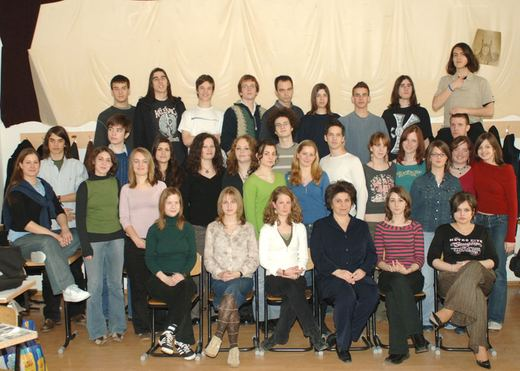
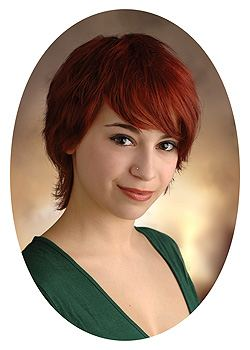
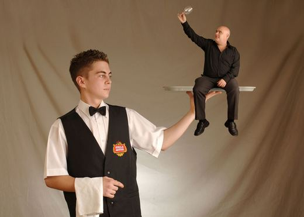
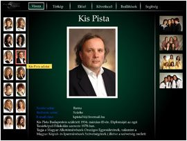
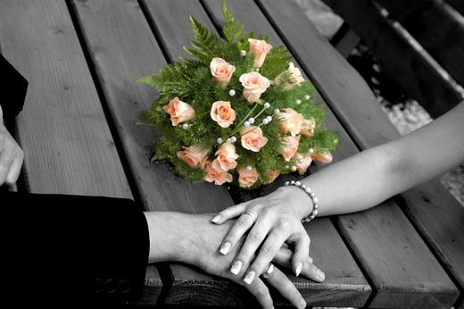
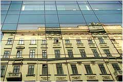

Fotóstúdió · Budapest, XI. kerület
Képek, amelyekre évtizedek múlva is büszke leszel
Tablók, szalagavatók és portrék korlátlan felvétellel, egyenként kézzel retusálva – az eredeti képeket pedig egy életen át megőrizzük.
Szolgáltatásaink
Az iskolai évek legszebb pillanataitól a nagy napig – minden képünk ugyanazzal a gondossággal készül.
-
Tabló
Fotózás az iskolában, közös tervezés, keretezett tabló és A4-es kistabló mindenkinek.
Részletek -

Szalagavató
Ingyenes rendezvényfotózás két állásból, több ezer rendszerezett képpel.
Részletek -

Osztálykép
Ötletes osztályképek – és mindenkinek egy 13×18-as kép ingyen.
Részletek -

Portré és retus
Korlátlan felvétel, válogatás nagy kijelzőn, egyenként kézzel retusált képek.
Részletek -

Különleges képek
Montázs, kézzel festett hátterek, páros és csoportképek.
Részletek -

Digitális évkönyv
Látványos, gyors, saját fejlesztésű digitális évkönyv – nyomtatva is.
Részletek -

Esküvő
Természetes, időtálló esküvői képek a nagy napról.
Részletek -

Cégeknek
Dolgozói tabló, beltéri és gömbpanoráma, tárgyfotó, time-lapse.
Részletek
Miért a Kép-S?
Korlátlan felvétel
Digitálisan dolgozunk, így annyi képet készítünk, amennyi kell. Ha egyik sem tetszik, jössz még egy körre.
Azonnal látod
A képeket a fotózás helyszínén, A4-es kijelzőn nézheted meg és válogathatod ki.
Kézi retus
Minden képet egyenként, kézzel retusálunk: elálló hajszálak, karikák és bőrhibák nélkül.
Utánrendelés bármikor
Az eredetit egy életen át megőrizzük. Nincs negatív vagy kód, amit elveszíthetnél.
Komplett megoldás
A tablót keretezve, üvegezve, falra akasztható állapotban adjuk át – digitálisan is.
Egyedi tervek
Nem előre gyártott sablonokat kínálunk: a ti ötleteitekből építjük fel a tablót.
A professzionális kép titka a retus
Minden képet egyenként, kézzel retusálunk. Emberi munkát nem kímélve azon vagyunk, hogy ha eljön az idő, ezt halld: „Nahát, nagymami, te ilyen szép voltál?”
Így készül a tabló
Az első ötlettől a falon lógó tablóig mindent intézünk.
Tervezés
Megbeszéljük az ötleteiteket, a stílust és a határidőket.
Fotózás az iskolában
Kimegyünk hozzátok, kábelek és sorban állás nélkül.
Válogatás és retus
Mindenki maga választja ki a kedvenc képét, mi pedig kézzel retusáljuk.
Átadás
Keretezett tabló, A4-es kistablók és a képek digitálisan is.
Kinek mit ajánlunk?
Válaszd ki, ki vagy – megmutatjuk, mi lehet érdekes számodra.
Tervezzük meg együtt a tablótokat!
Hívj minket, vagy írj egy e-mailt – szívesen segítünk megtervezni a fotózást.